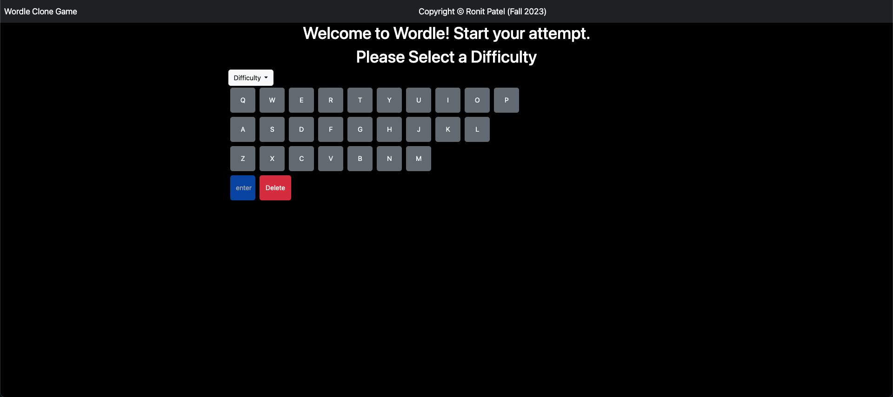
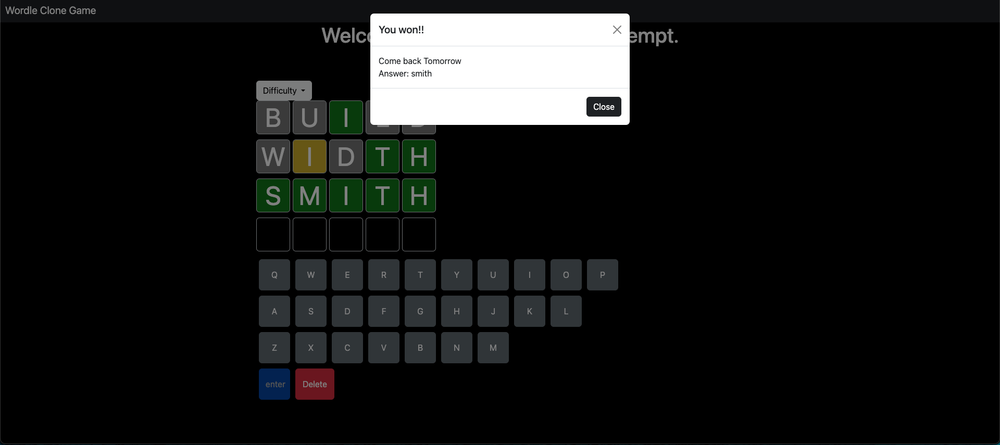
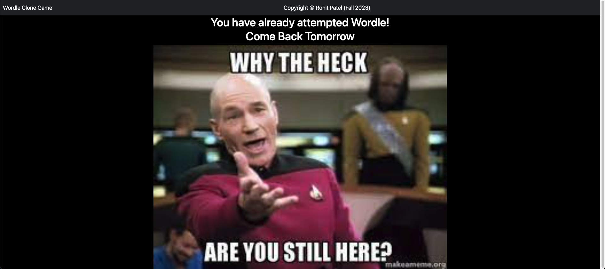

Welcome to the Wordle Clone! I created a simple word-guessing game inspired by the classic Wordle game. In this
clone, you'll be challenged to guess a hidden word within a limited number of attempts. The game features a
difficulty setting, allowing you to choose between easy, medium, and hard levels with varying attempts. Also like the original you can only play once a day.
Start Screen

How to Play
Objective:
The goal is to guess the hidden word.
The length of the word is displayed as a box, representing each letter's position.
Difficulty Settings:
Easy difficulty: 6 attempts
Medium difficulty: 4 attempts
Hard difficulty: 2 attempts
Making a Guess:
Enter a guess in the input field and submit.
The game will provide feedback after each guess:
Correct Letter and Position (Green Color): The letter is in the right
place.
Correct Letter, Wrong Position (Yellow Color): The letter is in the word but
not in the right place.
Incorrect Letter (Grey Color): The letter is not in the word.
Winning:
If you guess the word within the allotted attempts, the user wins!

Losing:
If you exhaust all attempts without guessing the word, the game ends.
The hidden word will be revealed.
Gameplay:
Choose your difficulty level and start guessing!
If you play again after you already gave an attempt you will see this:

Word Source
The hidden word in this Wordle Clone is dynamically fetched from the official New York Times Wordle site via a JSON
file. Unlike using a static list, I dynamically retrieve the single Wordle word available for the day at the time
of playing. This ensures a unique and fresh word for each playthrough.
Technologies Used
HTML
CSS
Bootstrap
JavaScript
Express
Acknowledgments
This Wordle Clone was created with inspiration from the classic Wordle game.